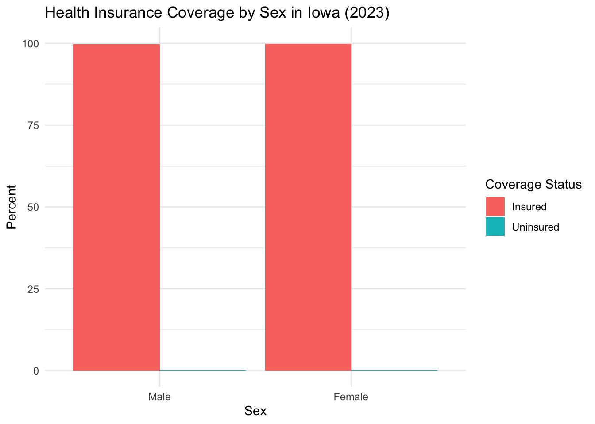
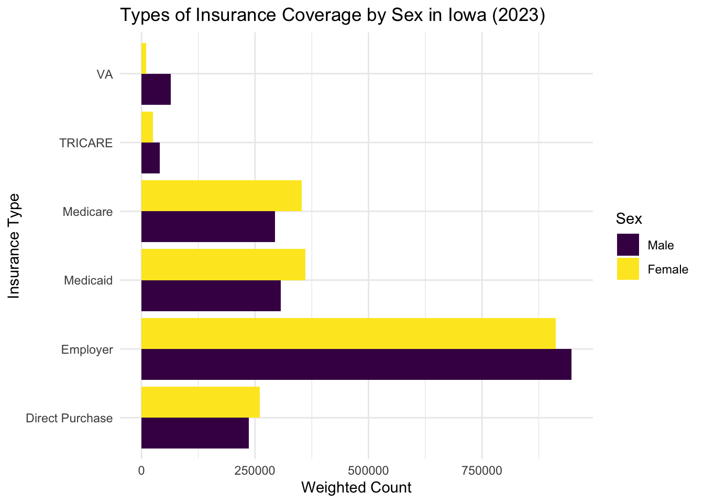

| Health Insurance Coverage by Sex in Iowa (ACS 2023) | ||
|---|---|---|
| Coverage Status | Weighted Count | Percent (%) |
| Male | ||
| Insured | 1,599,985 | 99.8 |
| Uninsured | 2,694 | 0.2 |
| Female | ||
| Insured | 1,602,560 | 99.9 |
| Uninsured | 1,765 | 0.1 |
Health Insurance Coverage Status by Sex in Iowa (ACS 2023)
Introduction
Health insurance coverage is a critical measure of access to healthcare services in the United States. This report presents an analysis of health insurance coverage status by sex in Iowa using the 2023 American Community Survey (ACS) and Public Use Microdata Sample (PUMS). The analysis identifies differences in insurance coverage between males and females and visualizes the distribution of uninsured and insured populations. Additionally, I have also explored spatial variation in uninsured rates across Iowa counties.
Data was pre-downloaded from the U.S. Census Bureau using the tidycensus package and saved locally.
Table: Health Insurance Coverage by Sex
The following table presents the weighted counts and proportions of insured and uninsured individuals by sex in Iowa. This summary allows us to quickly assess whether any sex-based disparity in health coverage exists at the state level.
Plot: Coverage by Sex
The bar chart below visualizes the proportion of insured versus uninsured individuals by sex. While the uninsured percentage is small for both groups, this visualization highlights even subtle differences.

Types of Insurance Coverage by Sex
Understanding the types of insurance coverage individuals have provides more detailed insight than simply identifying whether someone is insured. The chart below breaks down the weighted count of people by sex and by the type(s) of insurance coverage they reported in the 2023 ACS.
Each respondent may report more than one type of insurance, so categories are not mutually exclusive. For instance, a person might be covered by both employer-based insurance and Medicare.
Key findings include:
Employer-based insurance is the most common type of coverage for both males and females, reflecting its central role in the U.S. healthcare system.
Medicare and Medicaid follow, with slightly higher Medicaid coverage among females, likely due to eligibility related to caregiving roles and pregnancy.
TRICARE and VA coverage are more popular among males, reflecting the gender distribution in military service.
Direct purchase insurance shows relatively equal distribution, though this market typically includes self-employed individuals and those without employer-sponsored options.
These patterns show how insurance access pathways vary by sex and are shaped by employment, age, veteran status, and caregiving responsibilities.

Discussion
This analysis utilized data from the 2023 American Community Survey (ACS) 1-Year PUMS dataset, focusing on individuals in Iowa. The key variables analyzed include:
SEX – indicating the respondent’s sex (used to group and compare coverage rates)
HINS1 through HINS6 – representing different types of health insurance coverage:
HINS1: Employer-based insurance
HINS2: Direct-purchase insurance
HINS3: Medicare
HINS4: Medicaid
HINS5: TRICARE/military
HINS6: VA health care
HINS7 – identifies whether an individual is not covered by any health insurance, and was used to determine who is uninsured.
Descriptive results show that more than 99% of both males and females in Iowa reported having health insurance. The uninsured rate is slightly higher among males, a finding that aligns with broader national trends on gender and coverage gaps.
In terms of types of insurance coverage, the analysis shows that:
Employer-based insurance is the most common coverage type for both sexes.
Spatially, I used ACS table B27001 to obtain counts of uninsured individuals (B27001_005) and total population (B27001_001). These were joined to calculate the uninsured percentage, visualized in a choropleth map. Most counties had low uninsured rates (<2%), but subtle differences were visible.
Limitations
The ACS is a survey and subject to sampling error, particularly at smaller geographies like counties.
This analysis focuses on a single year (2023), limiting the ability to assess trends over time.
Key factors such as income, employment, race/ethnicity, education, or immigration status were not explored, though these likely interact significantly with coverage outcomes.
Insurance types are not mutually exclusive, so overlaps in coverage (e.g., dual Medicare and Medicaid enrollees) are possible and not fully considered in this analysis.
Conclusion
Most people in Iowa have health insurance, and there isn’t a big difference between males and females overall. However, there are still small gaps, with slightly more males being uninsured. Looking at this data can help identify areas where extra support or programs might help more people get covered.
Data Source
- U.S. Census Bureau, 2023 American Community Survey 1-Year PUMS
- Accessed via R using the tidycensus, sf, and ggrepel packages